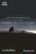
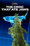
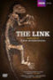

DOCUMENTALES DE LARGOMETRAJE
FEATURE DOCUMENTARIES
FEATURE DOCUMENTARIES
| Portada Cover |
Titulo Title |
Año Year |
Idioma Language |
Formato Format |
Resolución Resolution |
Elenco Cast |
Notas Notes |
|---|---|---|---|---|---|---|---|
| 50 Years of Star Trek | 2016 | EN | mp4 | 576p | Michael McKean, Leonard Nimoy, Nichelle Nichols, Jeri Ryan, Kevin Pollak, Gene Roddenberry, Mary Black, Ronald D. Moore, Jared Padalecki, John Barrowman, Matt Mira, John Putman, Ph.D., Doug Drexler, John D.F. Black, Mark A. Altman, Peter Gould, Scott Mantz, Simon Pegg, Walter Koenig, Whoopi Goldberg, Michael Dorn, Michael Sussman, Nicholas Meyer, Ike Eisenmann, Christopher Lloyd, Jonathan Frakes, Gates McFadden, John de Lancie, Brannon Braga, James Cromwell, Chase Masterson, Armin Shimerman, Tim Russ, Ethan Phillips, Sarah Silverman, Robert Beltran, Roxann Dawson, Anthony Montgomery, John Billingsley, Dominic Keating, Patrick Fabian, André Bormanis, Naren Shankar, Olivia Munn, Bruce Campbell, J.J. Abrams, Justin Lin, Karl Urban, D.C. Fontana, Marc Cushman | ||
| Ancient Gods of Egypt | 2017 | EN | mp4 | 1080p | Philip Gardiner | ||
| Attenborough and the Giant Dinosaur | 2016 | EN | mp4 | 720p | David Attenborough | ||
| Attenborough and the Giant Egg | 2011 | EN | mp4 | 720p | David Attenborough | ||
| Attenborough and the Giant Elephant | 2017 | EN | mp4 | SD | David Attenborough | ||
|  | Attenborough and the Mammoth Graveyard | 2021 | EN | mp4 | 1080p | David Attenborough, Professor Ben Garrod | |
| Attenborough and the Sea Dragon | 2018 | EN | mp4 | 1080p | David Attenborough, Benjamin Moon, Fiann Smithwick | ||
| Attenborough at 90: Behind the Lens | 2016 | EN | mp4 | SD | David Attenborough | ||
| Attenborough's Ark | 2012 | EN | mp4 | 1080p | David Attenborough | ||
| Attenborough's Paradise Birds | 2015 | EN | mp4 | 1080p | David Attenborough | ||
| Back To The Titanic | 2020 | EN | mp4 | 1080p | Nigel Barber, Elliot Graves, Lori Johnston, Sindbad Rumney-Guggenheim, Parks Stephenson, Victor Vescovo | ||
 |
Big Sharks Rule | 2018 | EN | mp4 | 1080p | ||
 |
Black Pharaohs: Sunken Treasures | 2019 | EN | mp4 | 1080p | N/A | |
 |
Breaking Boundaries: The Science of Our Planet | 2021 | EN | mp4 | 1080p | Johan Rockström, David Attenborough | |
| Buried Truth of the Maya | 2020 | EN | mp4 | 1080p | Josh Bernstein | ||
 |
Camo Sharks | 2022 | EN | mp4 | 1080p | Alex Sherratt, Sarah V. Burns | |
| The Captain's Summit | 2009 | EN | mp4 | 1080p | Jonathan Frakes, Whoopi Goldberg, Leonard Nimoy, William Shatner, Patrick Stewart | ||
| The Captains | 2011 | EN | mp4 | 576p | William Shatner, Patrick Stewart, Avery Brooks, Kate Mulgrew, Scott Bakula, Chris Pine | ||
| Charles Darwin and the Tree of Life | 2009 | EN | mp4 | 1080p | David Attenborough | ||
| China's Megatomb Revealed | 2016 | EN | mp4 | 1080p | Albert Yu-Min Lin | ||
|  | Croc That Ate Jaws | 2021 | EN | mp4 | 1080p | Mike Heithaus, Dan Nachtrab | |
| Curious Journey: The Easter Rising | 1966 | EN | mp4 | 576p | Kenneth Griffith | ||
| David Attenborough: A Life on Our Planet | 2020 | EN | mp4 | 1080p | David Attenborough | ||
| David Attenborough: The Early Years | 2013 | EN | mp4 | 480p | David Attenborough | ||
| David Attenborough's Tasmania | 2018 | EN | mp4 | 1080p | David Attenborough | ||
| David Attenborough’s Natural History Museum Alive | 2014 | EN | mp4 | 480p | David Attenborough | ||
| Deep Web | 2015 | EN | mp4 | 1080p | Keanu Reeves, Ross Ulbricht, Andy Greenberg, Nicolas Christin, Christopher Soghoian, Cindy Cohn, Cody Wilson, Christopher Tarbell, Todd Shipley, Alden Schiller, James Chaparro, Lyn Ulbricht, Runa Sandvik, Joshua Dratel, Nicholas Weaver, Neill Franklin, Christopher Ingraham, Kirk Ulbricht, Amir Taaki | ||
| Desert Seas | 2011 | EN | mp4 | 1080p | David Attenborough | ||
 |
Dolphins and Whales: Tribes of the Ocean | 2008 | EN | mp4 | 1080p | Daryl Hannah, Charlotte Rampling | |
| The Dolphins of Shark Bay | 2010 | EN | mp4 | 1080p | David Attenborough | ||
| Drain the Titanic | 2016 | EN | mp4 | 1080p | Russell Boulter, Brad Cartner, Kenneth Vrana | ||
| Egypt's Lost Queens | 2014 | EN | mp4 | 720p | Joann Fletcher | ||
| Egypt's Ten Greatest Discoveries | 2008 | EN | mp4 | SD | Zahi Hawass, Demetri Goritsas | ||
| Elsa the Lioness | 1961 | EN | mp4 | 480p | David Attenborough | ||
| Extinction: The Facts | 2020 | EN | mp4 | 1080p | David Attenborough | ||
| Flesh and Blood: The Hammer Heritage of Horror | 1994 | EN | mp4 | 1080p | Peter Cushing, Christopher Lee, Roy Ward Baker, Joe Dante, Ray Harryhausen, Caroline Munro, Ingrid Pitt, Raquel Welch, Freddie Francis, Hazel Court | ||
 |
Flooded Tombs of the Nile | 2021 | EN | mp4 | 1080p | Devin E. Haqq, Pearce Paul Creasman, Kristin Romey, Fakhri Hassan Abdallah, Justin Schneider, Henrik Brahe, Sami Elamin, Geoff Emberling, David Dunn | |
| Flying Monsters | 2010 | EN | mp4 | 480p | David Attenborough | ||
| Frida Kahlo | 2020 | EN | mp4 | 1080p | Ali Ray | ||
| Frida Viva la vida | 2021 | EN | mp4 | 1080p | Asia Argento | ||
| Get Collins | 2007 | EN | mp4 | 480p | N/A | ||
| The Ghost of Roger Casement (2001) | 2002 | EN | mp4 | 480p | Alan Gilsenan | ||
| Gorillas Revisited with Sir David Attenborough | 2007 | EN | mp4 | SD | David Attenborough | ||
 |
Great Shark Chow Down | 2019 | EN | mp4 | 1080p | Dan Nachtrab | |
 |
Great White Serial Killer: Fatal Christmas | 2022 | EN | mp4 | 1080p | Tony Sacco | |
 |
Great White Shark: Beyond the Cage of Fear | 2013 | EN | mp4 | 1080p | Thad Lacinak, Mauricio Hoyos, Steve Morris, Mark Healey, Mike Hoover, Hannah Fraser | |
| Great White Shark: The True Story of Jaws | 1995 | EN | mp4 | 480p | Great White Shark/ | ||
| Hang Up Your Brightest Colours | 1973 | EN | mp4 | 576p | Kenneth Griffith | ||
 |
Holy Silence | 2020 | EN | mp4 | 1080p | Marco Barricelli | |
| In Search of Dracula | 1974 | EN | mp4 | 720p | Christopher Lee, Solveig Andersson, Tor Isedal | ||
| In Search of Dracula with Mark Gatiss | 2020 | EN | mp4 | 720p | Mark Gatiss, Steven Moffat, Christopher Frayling, Jonathan Rigby, Linda Hayden, Joanna Lumley, Isla Blair, Susan Penhaligon, Caroline Munro, Jenny Hanley, Barbara Ewing, Claes Bang | ||
| Inside the Mind of Agatha Christie | 2020 | EN | mp4 | 1080p | Samantha Bond | ||
| The Kingmaker | 2019 | EN | mp4 | 720p | Imelda Marcos | ||
|  | The Link: Uncovering Our Earliest Ancestor | 2009 | EN | mp4 | SD | David Attenborough | |
| The Lost Gospels | 2008 | EN | mp4 | SD | Peter Owen-Jones | ||
| The Lost Mummy of Imhotep | 2000 | EN | mp4 | 576p | Discovery Channel Documentaries | ||
| The Lost Tomb Of Jesus | 2007 | EN | mp4 | SD | Mark Caven, James D. Tabor, Simcha Jacobovici, Saleh Bakri, Hadar Ratzon Rotem, Charles Pellegrino | ||
| Lost Tombs of the Pyramids | 2020 | EN | mp4 | 1080p | Demetri Goritsas | ||
 |
Man vs. Shark | 2019 | EN | mp4 | 1080p | Dave Hoffman | |
| The Man Who Lost Ireland | N/A | EN | mp4 | 480p | N/A | ||
| The Man Who Saw Tomorrow | 2001 | EN | mp4 | 480p | Orson Welles | ||
| Me, You and Doctor Who | 2013 | EN | mp4 | SD | Matt Smith, Richard Martin, Paul Hartnoll, Mark Ayres, Tristram Fry, Anthony Read, John Lloyd, Colin Baker, Janet Fielding, Richard Marson, Andrew Smith, Sylvester McCoy, Gareth Roberts, Paul Cornell, Rob Shearman, Gary Russell, Julie Gardner, Caitlin Moran | ||
| Memories of a Murderer: The Nilsen Tapes | 2021 | EN | mp4 | 1080p | Dennis Nilsen | ||
| Mise Éire | 1959 | GA | mp4 | 480p | Liam Budhlaeir, Padraig O'Raghallaigh | ||
 |
Orca Vs. Great White | 2021 | EN | mp4 | 1080p | Ray Robertson, Kina Scollay, Ingrid Visser | |
| Patagonia with Huw Edwards | 2015 | EN | mp4 | 480p | Huw Edwards | ||
| The Patriot Game | 1979 | EN | mp4 | SD | Arthur MacCaig | ||
| The Penguin King | 2012 | EN | mp4 | 720p | David Attenborough | ||
| Piripkura | 2018 | EN | mp4 | 1080p | Jair Condor, Rita Tupi Kawahib, Pakyî, Tamandua, Leila Sílvia Burger | ||
| The Real Sherlock Holmes | 2012 | EN | mp4 | 1080p | Gary Lang | ||
| Rose West: Born Evil? | 2021 | EN | mp4 | 1080p | Sally Bailey | ||
| Saoirse? | 1961 | GA | mp4 | 480p | Liam Budhlaeir, Aindreas O'Gallchoir, Padraig O'Raghallaigh | ||
 |
Secrets of the Bull Shark | 2020 | EN | mp4 | 1080p | Keston John | |
| Secrets of the Saqqara Tomb | 2020 | EN | mp4 | 1080p | James Tovell | ||
 |
Shark Gangs | 2021 | EN | mp4 | 1080p | Peter Berg, James Buchanan, Jacob Cobi Benattia | |
 |
Shark Queens | 2022 | EN | mp4 | 1080p | Amuche Chukudebelu | |
| Shark Superpower | 2022 | EN | mp4 | 1080p | Andy Casagrande, Dan Nachtrab | ||
 |
Sharks of Lost Island | 2013 | EN | mp4 | 1080p | Christopher McLinden | |
 |
Sharks of the Bermuda Triangle | 2020 | EN | mp4 | 1080p | Mike New | |
 |
Sky Sharks | 2022 | EN | mp4 | 1080p | Jennie Hammond | |
 |
Star Trek Evolutions | 2009 | EN | mp4 | 1080p | Leonard Nimoy | |
| Titanic Arrogance | 2011 | EN | mp4 | 1080p | Richard Mitchley, Paul Press, Mario Vernazza | ||
| Titanic: 20 Years Later with James Cameron | 2017 | EN | mp4 | 1080p | James Cameron, Jacqueline Astor Drexel, Robert D. Ballard, Harold Bride, Paul Kurzman, Don Lynch, Ken Marschall, William McMaster Murdoch, Gene Warren III, Gene Warren Jr. | ||
| Titanic: How It Really Sank | 2009 | EN | mp4 | 1080p | Patrick Reams | ||
| Titanic's Final Mystery | 2012 | EN | mp4 | 1080p | Nigel Levy | ||
 |
Titanic's Tragic Twin: The Britannic Disaster | 2016 | EN | mp4 | 1080p | Kate Humble, Andy Torbet | |
| Tom Barry: Guerilla Days in Ireland | 2011 | EN | mp4 | SD | Tom Barry | ||
| Tutankhamun In Colour | 2020 | EN | mp4 | 1080p | Howard Carter | ||
| Vatican: The Hidden World | 2011 | EN | mp4 | SD | Vatican: The Hidden World | ||
| Waster 1916: The Enemy Files | 2016 | EN | mp4 | SD | Michael Portillo | ||
| Whale Shark | 2008 | EN | mp4 | 720p | David Attenborough, Jessica Whittaker | ||
| Whale Wisdom | 2018 | EN | mp4 | 1080p | David Attenborough | ||
| What's a Carry On? | 1998 | EN | mp4 | 720p | Joan Sims, Jim Dale, Angela Douglas, Barbara Windsor, Leslie Phillips, Jack Douglas, Patsy Rowlands | ||
| World's Biggest Bull Shark? | 2021 | EN | mp4 | 1080p | Jason Hildebrandt | ||
 |
World's Most Dangerous Shark | 2012 | EN | mp4 | 1080p | Brian Cade | |
| The Year Earth Changed | 2021 | EN | mp4 | 1080p | David Attenborough, Bhashkar Bara, Dulu Bora, Anshul Chopra, Christine Gabriele, Meghna Hazarika, Russell MacLaughlin, Salim Mandela, Janet Neilson, Justin Perrault, Suzie Teerlink | ||
| Zoo Quest in Colour | 2016 | EN | mp4 | 720p | David Attenborough, Charles Lagus, Deborah Maclaren |